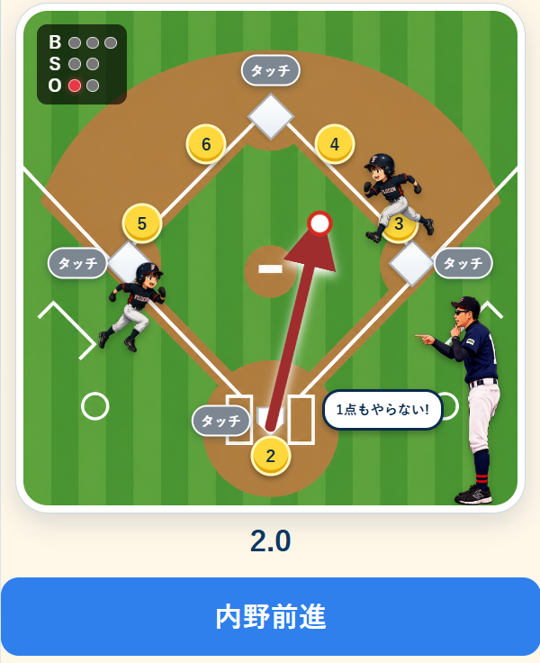

BとSの丸はグレー。Oだけが赤く光るよ。Oの赤い丸の数が、今のアウトの数だよ。
内野守備編 ゲーム説明
上から順に見れば、だいじょうぶ!
1
はじめに見る
今のようすを見よう

デモ くり返し① Oの赤い丸は1アウト
② ランナーを数える
③ 赤い矢印を見る
ランナーの絵がある塁を見よう。どの塁でアウトを取れるか考える手がかりだよ。
打ったボールが飛んだ方向だよ。矢印の先にいる選手がボールを取るよ。
プレーをえらぶ前に、アウトの数 → ランナーのいる塁の順に見よう。
- 今、何アウトか
- どの塁にランナーがいるか
- ボールがどの選手の方へきたか
ランナーが同じでも、0アウトと2アウトでは、よいプレーがかわるよ。
2
ボタンをおす
送球・タッチ・ゲッツー
デモ くり返し
タッチ
① ホームへ送球 → 赤い「タッチ」をおす → 青
② 2塁へ送球 → 1塁でゲッツー
送球（ボールを投げる）
アウトを取りたいベースをおすと、そこへボールを投げるよ。ベースをふむだけでアウトになるときは、「タッチ」をおさないよ。
タッチ
ランナーにタッチするプレーでは、先にベースをおすよ。そのあと、赤くなった「タッチ」をおそう。
ゲッツー
アウトを2つ取りたいときのプレーだよ。ボールを投げる順に、ちがう2つのベースをおそう。
3
3塁ランナーがいるとき
監督のことばを見よう
デモ くり返し
3
4
6
5
監督のことばを見る
「アウト優先!」
通常守備のまま、いちばん取りやすいアウトを取ろう。ホームを先におしたり、「内野前進」をおしたりしないよ。
「1点もやらない!」
3塁ランナーをホームで止めよう。まずホームをおすよ。通常守備ではホームから遠いので、内野前進を使うとアウトにしやすいよ。
3塁にランナーがいたら、ベースをおす前に、監督のふき出しを読もう。
4
じょうずになるしくみ
点数とレベルアップ
◎3点100点満点!
○2点OK!
△1点おしい!
×0点復習しよう
問題に答えると、点数と同じだけXPがたまるよ。XPは、がんばった分だけふえる「けいけんち」だよ。
理解度は、「ぜんぶ◎だったときの点」のうち、どれだけ取れたかをあらわすよ。ぜんぶ◎なら100%!
体験生
入団!
XP 20
2問以上
理解度70%
体験生 → 入団XPを20ためる・体験生になってから10問以上プレー・理解度70%以上
入団 → 準レギュラーXPを60ためる・入団してから20問以上プレー・理解度75%以上
準レギュラー → レギュラーXPを120ためる・準レギュラーになってから30問以上プレー・理解度75%以上
レギュラー → オール上尾XPを220ためる・レギュラーになってから45問以上プレー・理解度80%以上
オール上尾 → コーチXPを350ためる・オール上尾になってから55問以上プレー・理解度80%以上
コーチ → 監督XPを500ためる・コーチになってから60問以上プレー・理解度85%以上
監督 → NPBXPを700ためる・監督になってから80問以上プレー・理解度85%以上
NPB → メジャーXPを950ためる・NPBになってから95問以上プレー・理解度90%以上
メジャー → 殿堂入りXPを1250ためる・115問連続で満点の判断・理解度100%
レベルはぜんぶで10こ!
1体験生XP 0
2入団XP 20
3準レギュラーXP 60
4レギュラーXP 120
5オール上尾XP 220
6コーチXP 350
7監督XP 500
8NPBXP 700
9メジャーXP 950
10殿堂入りXP 1250
どんなゲーム?
アウトの数、ランナー、打球の方向、監督のことばを見て、守備位置とボールを送る塁を決めるゲームだよ。ベースや「タッチ」を正しい順におして、アウトを取ろう。
どうしたらレベルが上がる?
よいプレーほどXPがたくさんもらえるよ。必要な問題数に答える・XPをためる・目標の理解度をこえるの3つがそろうとレベルアップ! ひとつずつ正しいアウトをふやして、レベル10「殿堂入り」をめざそう。
XP、問題の数、理解度の3つがそろうとレベルアップ! ◎や○をふやそう。
① → ② → ③ の順でやってみよう!
アウトとランナーを見て、ベースをおそう。3塁ランナーがいたら、監督のことばもわすれずに。レギュラー、オール上尾、監督、そして殿堂入りを目指してがんばろう!
操作チュートリアルをはじめる 説明を終えて本番へ進む